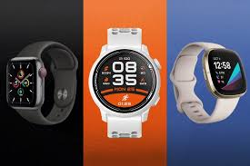

Comparativa de Smartwatches 2024: ¿Cuál es el Mejor para Ti?
Introducción
En este artículo, comparamos los mejores smartwatches de 2024. Analizaremos sus características, diseño, rendimiento y relación calidad-precio para ayudarte a decidir cuál es el más adecuado para ti.
Apple Watch Series 9
El Apple Watch Series 9 ofrece una integración perfecta con el ecosistema de Apple, con nuevas funcionalidades de salud y fitness, y una pantalla siempre activa más brillante. Es ideal para usuarios de iPhone que buscan lo mejor en tecnología wearable.
Samsung Galaxy Watch 6
El Galaxy Watch 6 destaca por su compatibilidad con dispositivos Android, su batería de larga duración y sus avanzadas funciones de monitoreo de salud. Es una excelente opción para los usuarios de Android que desean un smartwatch versátil.
Fitbit Sense 2
El Fitbit Sense 2 se centra en el bienestar y la salud, con sensores avanzados para el monitoreo del estrés, la frecuencia cardíaca y el sueño. Es ideal para aquellos que buscan mejorar su salud y bienestar general.
Garmin Forerunner 965
El Garmin Forerunner 965 está diseñado para atletas y corredores, con GPS de alta precisión, métricas de rendimiento avanzadas y una batería de larga duración. Perfecto para quienes toman en serio su entrenamiento.
Conclusión
Cada uno de estos smartwatches ofrece algo único. Elige el Apple Watch Series 9 si eres usuario de iPhone, el Samsung Galaxy Watch 6 para una excelente experiencia en Android, el Fitbit Sense 2 para un enfoque en la salud, y el Garmin Forerunner 965 si eres un atleta serio.
Pros y Contras
- Apple Watch Series 9:
- Pros: Integración con iPhone, funciones de salud avanzadas
- Contras: Precio elevado, solo compatible con iPhone
- Samsung Galaxy Watch 6:
- Pros: Excelente para Android, buena duración de batería
- Contras: Menos opciones de apps que Apple Watch
- Fitbit Sense 2:
- Pros: Enfoque en salud y bienestar, buenos sensores
- Contras: Menos opciones de personalización
- Garmin Forerunner 965:
- Pros: Perfecto para atletas, GPS preciso
- Contras: Interfaz menos intuitiva
Publicidad